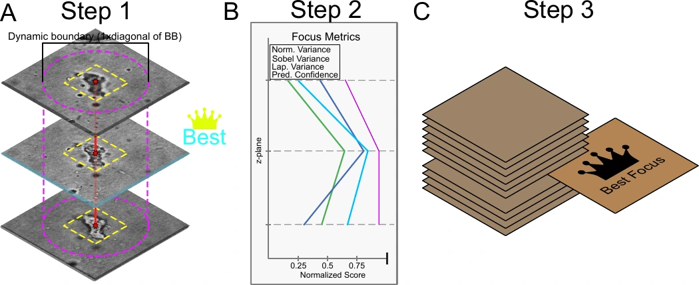
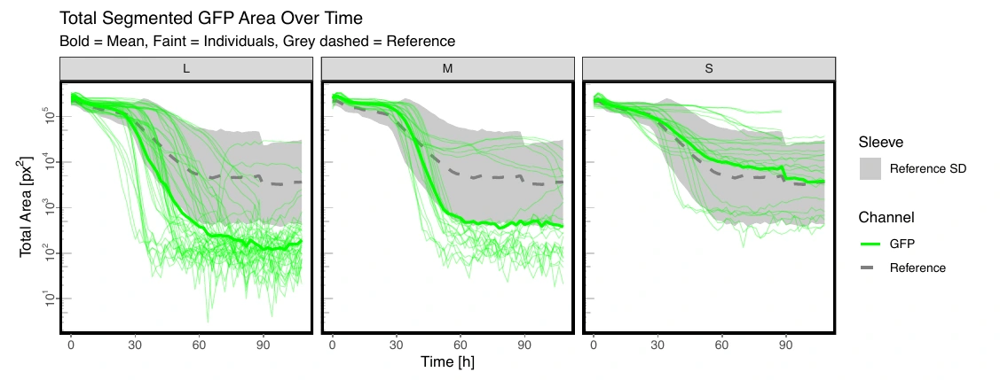

03 Master’s thesis · Heidelberg University · 2026
Predation at the microscale
How do small openings change a predator’s access to its prey? I built a multimodal microscopy pipeline to quantify how soil protists move and how bacterial abundance changes in microfluidic assays.
Motivation
Can prey shelter in smaller pores?
In soil, pore openings can limit which predators reach their prey. To study that effect, EMBL Heidelberg’s Van Gestel group ran assays with 1, 2, and 10 µm openings in microfluidic chips. I developed the analysis pipeline for the microscopy data from those experiments.
Quantitative approach
Measure predators, prey, and movement
I built a Nextflow workflow that aligns time series and applies channel-specific models. Custom YOLO models segmented objects in label-free microscopy (DIC) and red exclusion-dye images. An ilastik classifier measured the area covered by fluorescently labeled bacteria. The workflow yielded more than 300,000 protist detections across the assays.
Method
Link the planes, keep the clearest view
One protist can appear in several optical sections. Within each time point, I linked masks across the 11 DIC focal planes and chose one plane per object for measuring its size, shape, and texture. The final focus score combined edge sharpness and contrast with the local background, using model confidence to break ties.

Result
Smaller openings limited predator access
At 10 µm, activity extended across the barrier and fluorescent bacterial coverage declined fastest. At 2 µm, activity beyond the barrier was reduced but still detectable. The 1 µm openings appeared largely impassable to protists in these assays. Object counts from DIC and the red exclusion-dye channel also fell as openings narrowed.


Phenotypic diversity
Size explained the most variation
I compared measurements of size, shape, texture, and intensity with features learned by a Cell-DINO–inspired model. Size was the main axis of variation in the measured features. Both approaches gave exploratory maps of protist phenotypes, with taxonomic identity still unresolved.
Thesis title
Development of a multi-modal image analysis pipeline to phenotype predator-prey dynamics in microfluidic predation assays. Jonas Wagner, Heidelberg University, 2026.